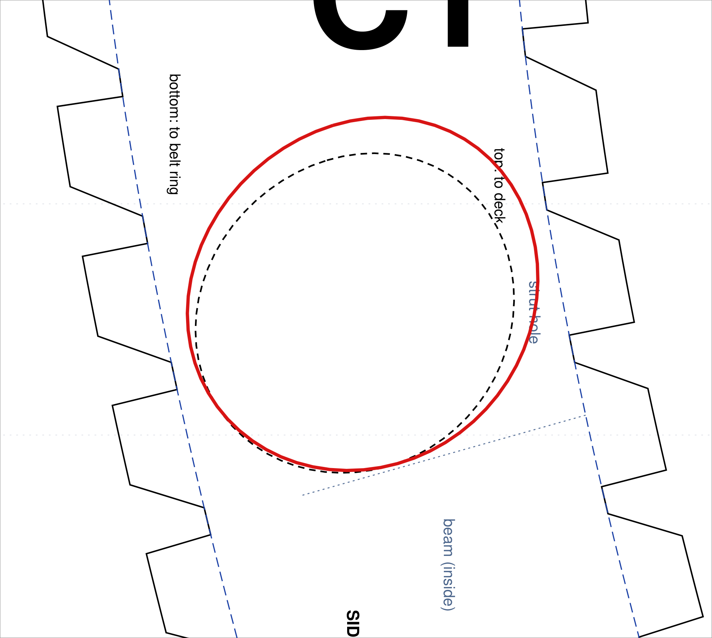
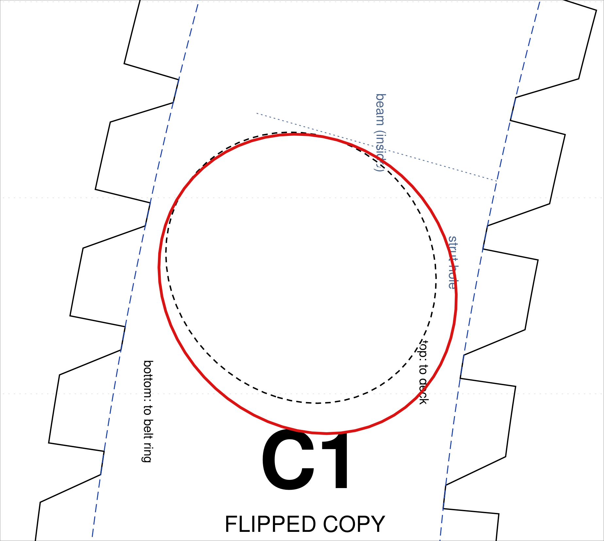

Step 1: make the screen show true size
The browser doesn't know how big your screen's pixels are, so match it once with something you can measure. Keep the browser zoom at 100% (Ctrl+0) while you do this and while you trace.
- Hold a ruler against the screen on the black line below.
- Drag the slider (or use the − / + buttons) until the line is exactly 10 cm on your ruler.
- Check with a bank card (any credit/debit card is 85.6 × 54 mm): it should fit the box exactly.
bank card goes here
Page 1 of your roll print, upper C1dashed = hole as printedsolid red = new hole: trace this

Page 1 of your roll print, flipped C1dashed = hole as printedsolid red = new hole: trace this

Tracing: screen brightness to full, hold the printed sheet on the screen, line up the dashed circle, blue fold lines and tab edges with your print, and trace the red line with a soft pencil. Press lightly: screens scratch and dent.